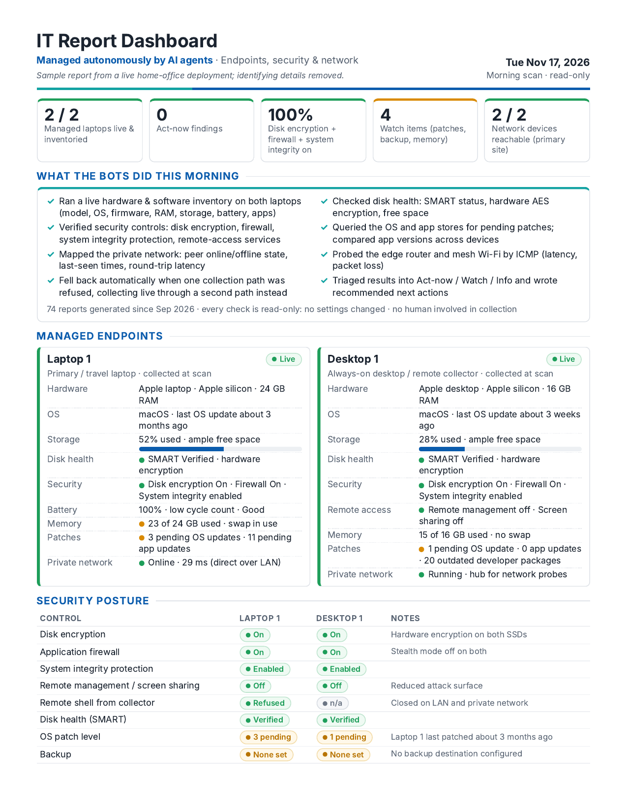

AI IT agent
IT that checks itself every morning.
Meet Hayes, our AI IT agent. It watches devices, security and the network, tells you what needs attention, and never changes anything without your approval.
Avoid the high cost of experts doing routine tasks.
Move routine, low-cost IT work to a bot, and save your experts for more sophisticated issues.
What it does
Capabilities at a glance
| Capability | What it does |
|---|---|
| Device Health | Encryption, firewall, disk and remote-access checks. |
| Patch Status | Pending updates and version drift across devices. |
| Network Reachability | Which devices are online, last seen and latency. |
| Router And Mesh | Latency, packet loss, WAN drops and failover. |
| Network Management | Device and application priority, traffic shaping. |
| Starlink Management | Automatic traffic shaping to avoid costly overage charges. |
| Triage | Act now, Watch or Info, each with a recommended action. |
| Trend Report | Checks rolled into trends over time. |
| Owner Approval | Flags and recommends; nothing changes without your yes. |
| Tech Support | Help by chat, email or voice for everyday questions and guided fixes; flags what it cannot resolve. |
| Cyber Awareness | Cyber training for staff, customized to each person's devices and activities. |
Sample output
The IT Report Dashboard
From a live deployment, with identifying details removed.

A morning report with recommended actions. None were applied without approval.
Who it is for
Built for offices with small or no IT teams.
Small and home offices
A handful of devices and no one whose job is to check them. Hayes gives you a clear answer.
Vessels and remote sites
Where a visit is a trip, knowing what is behind or offline before you go saves time and bandwidth.
The larger point
Make the infrastructure you already bought do more.
- Watch metered satellite and backup allowances and, within your policies, protect the traffic that matters.
- Spend less time in consoles, avoid extra bandwidth and hardware cost, and put unused features to work.
- Move routine work to a bot; keep experts for more sophisticated issues.
Hayes flags and recommends; it does not fix on its own.
Get started
Get the IT bot free on Grok Bot
Business IT Guardian is a free Grok Bot template. Add it to your Grok Bot and it starts the checks. It flags and recommends; it does not fix on its own.
From deployed to delivering
Want a morning report
for your own systems?
Let's talk about what an AI IT agent could check for your business, fleet or site.